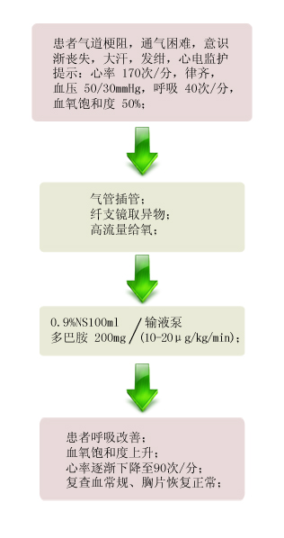

【病例摘要】
- 现病史：患者，男，63岁，两小时前晚饭时突发喘憋，呼吸困难，咳嗽，咳白色泡沫痰，面色发紫。
- 既往史：既往体健，否认冠心病、高血压、慢支等病史。否认过敏史。。
- 查体：T 37.8℃ P 120次/分 R 27次/分 BP 140/90mmHg ，意识淡漠，口唇紫绀，大汗，右肺呼吸音较左肺低，两肺可及散在哮鸣音及湿罗音，右肺较明显，心率120次/分，未及明显杂音。腹软无压痛及反跳痛。

【辅助检查】
- 胸片:

- 血常规:

- 血气分析:

【诊断】
- 右支气管异物
【事件】
